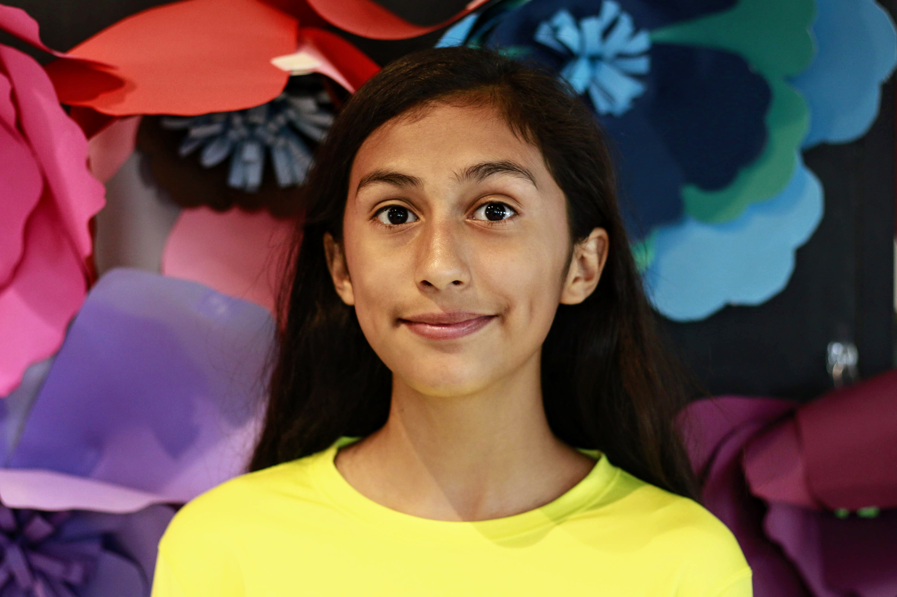

My name is Isabella Gonzalez and I was born in Houston Tx in the astonishing year of 2006. I am a Mexican Latina and In 2017 I moved to Austin tx because of hurricane Harvey. It was scary to be leaving so soon away from family and friends but I adjusted. Ive always wanted to learn coding as a back up plan for my future career and found it was tremendously enjoyable and fun. My hobbies include playing the piano, learning how to play the violin, drawing, baking, running, astronomy, and playing basketball. My education is at west ridge middle school and my career goals are at least 4 main options. Computer Programmer, Lawyer, Creative Writer, and animator/graphic designer. I do mainly hope to become a writer and the reason why is that I feel my words come out more profound through the art of writing -bella.G
